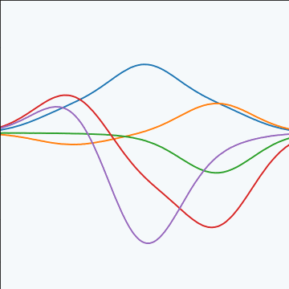
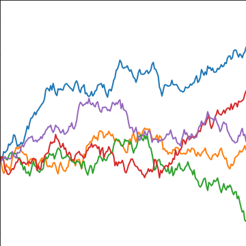
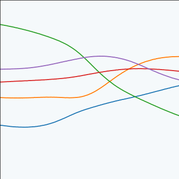
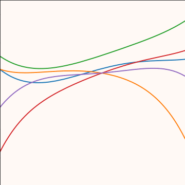
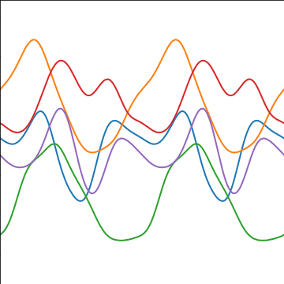

R250: Gaussian Processes Introduction
Computer Lab, University of Cambridge


Laplace’s Gremlin


What is Machine Learning?
What is Machine Learning?
\[ \text{data} + \text{model} \stackrel{\text{compute}}{\rightarrow} \text{prediction}\]
- data : observations, could be actively or passively acquired (meta-data).
- model : assumptions, based on previous experience (other data! transfer learning etc), or beliefs about the regularities of the universe. Inductive bias.
- prediction : an action to be taken or a categorization or a quality score.
- Royal Society Report: Machine Learning: Power and Promise of Computers that Learn by Example
What is Machine Learning?
\[\text{data} + \text{model} \stackrel{\text{compute}}{\rightarrow} \text{prediction}\]
- To combine data with a model need:
- a prediction function \(f(\cdot)\) includes our beliefs about the regularities of the universe
- an objective function \(E(\cdot)\) defines the cost of misprediction.
Artificial Intelligence
- Machine learning is a mainstay because of importance of prediction.
Uncertainty
- Uncertainty in prediction arises from:
- scarcity of training data and
- mismatch between the set of prediction functions we choose and all possible prediction functions.
- Also uncertainties in objective, leave those for another day.
Neural Networks and Prediction Functions
- adaptive non-linear function models inspired by simple neuron models (McCulloch and Pitts, 1943)
- have become popular because of their ability to model data.
- can be composed to form highly complex functions
- start by focussing on one hidden layer
Prediction Function of One Hidden Layer
\[ f(\mathbf{ x}) = \left.\mathbf{ w}^{(2)}\right.^\top \boldsymbol{ \phi}(\mathbf{W}_{1}, \mathbf{ x}) \]
\(f(\cdot)\) is a scalar function with vector inputs,
\(\boldsymbol{ \phi}(\cdot)\) is a vector function with vector inputs.
dimensionality of the vector function is known as the number of hidden units, or the number of neurons.
elements of \(\boldsymbol{ \phi}(\cdot)\) are the activation function of the neural network
elements of \(\mathbf{W}_{1}\) are the parameters of the activation functions.
Relations with Classical Statistics
In statistics activation functions are known as basis functions.
would think of this as a linear model: not linear predictions, linear in the parameters
\(\mathbf{ w}_{1}\) are static parameters.
Adaptive Basis Functions
- In machine learning we optimize \(\mathbf{W}_{1}\) as well as \(\mathbf{W}_{2}\) (which would normally be denoted in statistics by \(\boldsymbol{\beta}\)).
Integrated Basis Functions
Revisit that decision: follow the path of Neal (1994) and MacKay (1992).
Consider the probabilistic approach.
Probabilistic Modelling
- Probabilistically we want, \[ p(y_*|\mathbf{ y}, \mathbf{X}, \mathbf{ x}_*), \] \(y_*\) is a test output \(\mathbf{ x}_*\) is a test input \(\mathbf{X}\) is a training input matrix \(\mathbf{ y}\) is training outputs
Joint Model of World
\[ p(y_*|\mathbf{ y}, \mathbf{X}, \mathbf{ x}_*) = \int p(y_*|\mathbf{ x}_*, \mathbf{W}) p(\mathbf{W}| \mathbf{ y}, \mathbf{X}) \text{d} \mathbf{W} \]
\(\mathbf{W}\) contains \(\mathbf{W}_1\) and \(\mathbf{W}_2\)
\(p(\mathbf{W}| \mathbf{ y}, \mathbf{X})\) is posterior density
Likelihood
\(p(y|\mathbf{ x}, \mathbf{W})\) is the likelihood of data point
Normally assume independence: \[ p(\mathbf{ y}|\mathbf{X}, \mathbf{W}) = \prod_{i=1}^np(y_i|\mathbf{ x}_i, \mathbf{W}),\]
Likelihood and Prediction Function
\[ p(y_i | f(\mathbf{ x}_i)) = \frac{1}{\sqrt{2\pi \sigma^2}} \exp\left(-\frac{\left(y_i - f(\mathbf{ x}_i)\right)^2}{2\sigma^2}\right) \]
Unsupervised Learning
Can also consider priors over latents \[ p(\mathbf{ y}_*|\mathbf{ y}) = \int p(\mathbf{ y}_*|\mathbf{X}_*, \mathbf{W}) p(\mathbf{W}| \mathbf{ y}, \mathbf{X}) p(\mathbf{X}) p(\mathbf{X}_*) \text{d} \mathbf{W}\text{d} \mathbf{X}\text{d}\mathbf{X}_* \]
This gives unsupervised learning.
Probabilistic Inference
Data: \(\mathbf{ y}\)
Model: \(p(\mathbf{ y}, \mathbf{ y}^*)\)
Prediction: \(p(\mathbf{ y}^*| \mathbf{ y})\)
Graphical Models
- Represent joint distribution through conditional dependencies.
- E.g. Markov chain
\[p(\mathbf{ y}) = p(y_n| y_{n-1}) p(y_{n-1}|y_{n-2}) \dots p(y_{2} | y_{1})\]
Predict Perioperative Risk of Clostridium Difficile Infection Following Colon Surgery (Steele et al., 2012)

Performing Inference
Easy to write in probabilities
But underlying this is a wealth of computational challenges.
High dimensional integrals typically require approximation.
Linear Models
In statistics, focussed more on linear model implied by \[ f(\mathbf{ x}) = \left.\mathbf{ w}^{(2)}\right.^\top \boldsymbol{ \phi}(\mathbf{W}_1, \mathbf{ x}) \]
Hold \(\mathbf{W}_1\) fixed for given analysis.
Gaussian prior for \(\mathbf{W}\), \[ \mathbf{ w}^{(2)} \sim \mathcal{N}\left(\mathbf{0},\mathbf{C}\right). \] \[ y_i = f(\mathbf{ x}_i) + \epsilon_i, \] where \[ \epsilon_i \sim \mathcal{N}\left(0,\sigma^2\right) \]
Linear Gaussian Models
- Normally integrals are complex but for this Gaussian linear case they are trivial.
Multivariate Gaussian Properties
Recall Univariate Gaussian Properties
- Sum of Gaussian variables is also Gaussian.
\[y_i \sim \mathcal{N}\left(\mu_i,\sigma_i^2\right)\]
\[\sum_{i=1}^{n} y_i \sim \mathcal{N}\left(\sum_{i=1}^n\mu_i,\sum_{i=1}^n\sigma_i^2\right)\]
Recall Univariate Gaussian Properties
- Scaling a Gaussian leads to a Gaussian.
\[y\sim \mathcal{N}\left(\mu,\sigma^2\right)\]
\[wy\sim \mathcal{N}\left(w\mu,w^2 \sigma^2\right)\]
Multivariate Consequence
\[\mathbf{ x}\sim \mathcal{N}\left(\boldsymbol{ \mu},\mathbf{C}\right)\]
\[\mathbf{ y}= \mathbf{W}\mathbf{ x}\]
\[\mathbf{ y}\sim \mathcal{N}\left(\mathbf{W}\boldsymbol{ \mu},\mathbf{W}\mathbf{C}\mathbf{W}^\top\right)\]
Linear Gaussian Models
- linear Gaussian models are easier to deal with
- Even the parameters within the process can be handled, by considering a particular limit.
Multivariate Gaussian Properties
If \[ \mathbf{ y}= \mathbf{W}\mathbf{ x}+ \boldsymbol{ \epsilon}, \]
Assume \[ \begin{align} \mathbf{ x}& \sim \mathcal{N}\left(\boldsymbol{ \mu},\mathbf{C}\right)\\ \boldsymbol{ \epsilon}& \sim \mathcal{N}\left(\mathbf{0},\boldsymbol{ \Sigma}\right) \end{align} \]
Then \[ \mathbf{ y}\sim \mathcal{N}\left(\mathbf{W}\boldsymbol{ \mu},\mathbf{W}\mathbf{C}\mathbf{W}^\top + \boldsymbol{ \Sigma}\right). \] If \(\boldsymbol{ \Sigma}=\sigma^2\mathbf{I}\), this is Probabilistic PCA (Tipping and Bishop, 1999).
Linear Model Overview
- Set each activation function computed at each data point to be
\[ \phi_{i,j} = \phi(\mathbf{ w}^{(1)}_{j}, \mathbf{ x}_{i}) \] Define design matrix \[ \boldsymbol{ \Phi}= \begin{bmatrix} \phi_{1, 1} & \phi_{1, 2} & \dots & \phi_{1, h} \\ \phi_{1, 2} & \phi_{1, 2} & \dots & \phi_{1, n} \\ \vdots & \vdots & \ddots & \vdots \\ \phi_{n, 1} & \phi_{n, 2} & \dots & \phi_{n, h} \end{bmatrix}. \]
Matrix Representation of a Neural Network
\[y\left(\mathbf{ x}\right) = \boldsymbol{ \phi}\left(\mathbf{ x}\right)^\top \mathbf{ w}+ \epsilon\]
\[\mathbf{ y}= \boldsymbol{ \Phi}\mathbf{ w}+ \boldsymbol{ \epsilon}\]
\[\boldsymbol{ \epsilon}\sim \mathcal{N}\left(\mathbf{0},\sigma^2\mathbf{I}\right)\]
Multivariate Gaussian Properties
If \[ \mathbf{ y}= \mathbf{W}\mathbf{ x}+ \boldsymbol{ \epsilon}, \]
Assume \[ \begin{align} \mathbf{ x}& \sim \mathcal{N}\left(\boldsymbol{ \mu},\mathbf{C}\right)\\ \boldsymbol{ \epsilon}& \sim \mathcal{N}\left(\mathbf{0},\boldsymbol{ \Sigma}\right) \end{align} \]
Then \[ \mathbf{ y}\sim \mathcal{N}\left(\mathbf{W}\boldsymbol{ \mu},\mathbf{W}\mathbf{C}\mathbf{W}^\top + \boldsymbol{ \Sigma}\right). \] If \(\boldsymbol{ \Sigma}=\sigma^2\mathbf{I}\), this is Probabilistic PCA (Tipping and Bishop, 1999).
Prior Density
- Define \[ \mathbf{ w}\sim \mathcal{N}\left(\mathbf{0},\alpha\mathbf{I}\right), \]
- Rules of multivariate Gaussians to see that, \[ \mathbf{ y}\sim \mathcal{N}\left(\mathbf{0},\alpha \boldsymbol{ \Phi}\boldsymbol{ \Phi}^\top + \sigma^2 \mathbf{I}\right). \]
\[ \mathbf{K}= \alpha \boldsymbol{ \Phi}\boldsymbol{ \Phi}^\top + \sigma^2 \mathbf{I}. \]
Joint Gaussian Density
- Elements are a function \(k_{i,j} = k\left(\mathbf{ x}_i, \mathbf{ x}_j\right)\)
\[ \mathbf{K}= \alpha \boldsymbol{ \Phi}\boldsymbol{ \Phi}^\top + \sigma^2 \mathbf{I}. \]
Covariance Function
\[ k_f\left(\mathbf{ x}_i, \mathbf{ x}_j\right) = \alpha \boldsymbol{ \phi}\left(\mathbf{W}_1, \mathbf{ x}_i\right)^\top \boldsymbol{ \phi}\left(\mathbf{W}_1, \mathbf{ x}_j\right) \]
- formed by inner products of the rows of the design matrix.
Gaussian Process
Instead of making assumptions about our density over each data point, \(y_i\) as i.i.d.
make a joint Gaussian assumption over our data.
covariance matrix is now a function of both the parameters of the activation function, \(\mathbf{W}_1\), and the input variables, \(\mathbf{X}\).
Arises from integrating out \(\mathbf{ w}^{(2)}\).
Basis Functions
- Can be very complex, such as deep kernels, (Cho and Saul, 2009) or could even put a convolutional neural network inside.
- Viewing a neural network in this way is also what allows us to beform sensible batch normalizations (Ioffe and Szegedy, 2015).
Non-degenerate Gaussian Processes
- This process is degenerate.
- Covariance function is of rank at most \(h\).
- As \(n\rightarrow \infty\), covariance matrix is not full rank.
- Leading to \(\det{\mathbf{K}} = 0\)
Infinite Networks
- In ML Radford Neal (Neal, 1994) asked “what would happen if you took \(h\rightarrow \infty\)?”

Roughly Speaking
- Instead of \[ \begin{align*} k_f\left(\mathbf{ x}_i, \mathbf{ x}_j\right) & = \alpha \boldsymbol{ \phi}\left(\mathbf{W}_1, \mathbf{ x}_i\right)^\top \boldsymbol{ \phi}\left(\mathbf{W}_1, \mathbf{ x}_j\right)\\ & = \alpha \sum_k \phi\left(\mathbf{ w}^{(1)}_k, \mathbf{ x}_i\right) \phi\left(\mathbf{ w}^{(1)}_k, \mathbf{ x}_j\right) \end{align*} \]
- Sample infinitely many from a prior density, \(p(\mathbf{ w}^{(1)})\), \[ k_f\left(\mathbf{ x}_i, \mathbf{ x}_j\right) = \alpha \int \phi\left(\mathbf{ w}^{(1)}, \mathbf{ x}_i\right) \phi\left(\mathbf{ w}^{(1)}, \mathbf{ x}_j\right) p(\mathbf{ w}^{(1)}) \text{d}\mathbf{ w}^{(1)} \]
- Also applies for non-Gaussian \(p(\mathbf{ w}^{(1)})\) because of the central limit theorem.
Simple Probabilistic Program
If \[ \begin{align*} \mathbf{ w}^{(1)} & \sim p(\cdot)\\ \phi_i & = \phi\left(\mathbf{ w}^{(1)}, \mathbf{ x}_i\right), \end{align*} \] has finite variance.
Then taking number of hidden units to infinity, is also a Gaussian process.
Further Reading
Chapter 2 of Neal’s thesis (Neal, 1994)
Rest of Neal’s thesis. (Neal, 1994)
David MacKay’s PhD thesis (MacKay, 1992)
Distributions over Functions
Sampling a Function
Multi-variate Gaussians
- We will consider a Gaussian with a particular structure of covariance matrix.
- Generate a single sample from this 25 dimensional Gaussian density, \[ \mathbf{ f}=\left[f_{1},f_{2}\dots f_{25}\right]. \]
- We will plot these points against their index.
Gaussian Distribution Sample
Sampling a Function from a Gaussian
Joint Density of \(f_1\) and \(f_2\)
Prediction of \(f_{2}\) from \(f_{1}\)
Uluru

Prediction with Correlated Gaussians
- Prediction of \(f_2\) from \(f_1\) requires conditional density.
- Conditional density is also Gaussian. \[ p(f_2|f_1) = \mathcal{N}\left(f_2|\frac{k_{1, 2}}{k_{1, 1}}f_1, k_{2, 2} - \frac{k_{1,2}^2}{k_{1,1}}\right) \] where covariance of joint density is given by \[ \mathbf{K}= \begin{bmatrix} k_{1, 1} & k_{1, 2}\\ k_{2, 1} & k_{2, 2}.\end{bmatrix} \]
Joint Density of \(f_1\) and \(f_8\)
Prediction of \(f_{8}\) from \(f_{1}\)
Details
- The single contour of the Gaussian density represents the joint distribution, \(p(f_1, f_8)\)
- We observe a value for \(f_1=-?\)
- Conditional density: \(p(f_8|f_1=?)\).
Prediction with Correlated Gaussians
Prediction of \(\mathbf{ f}_*\) from \(\mathbf{ f}\) requires multivariate conditional density.
Multivariate conditional density is also Gaussian.
\[ p(\mathbf{ f}_*|\mathbf{ f}) = {\mathcal{N}\left(\mathbf{ f}_*|\mathbf{K}_{*,\mathbf{ f}}\mathbf{K}_{\mathbf{ f},\mathbf{ f}}^{-1}\mathbf{ f},\mathbf{K}_{*,*}-\mathbf{K}_{*,\mathbf{ f}} \mathbf{K}_{\mathbf{ f},\mathbf{ f}}^{-1}\mathbf{K}_{\mathbf{ f},*}\right)} \] Here covariance of joint density is given by \[ \mathbf{K}= \begin{bmatrix} \mathbf{K}_{\mathbf{ f}, \mathbf{ f}} & \mathbf{K}_{*, \mathbf{ f}}\\ \mathbf{K}_{\mathbf{ f}, *} & \mathbf{K}_{*, *}\end{bmatrix} \]
Prediction with Correlated Gaussians
Prediction of \(\mathbf{ f}_*\) from \(\mathbf{ f}\) requires multivariate conditional density.
Multivariate conditional density is also Gaussian.
\[ p(\mathbf{ f}_*|\mathbf{ f}) = {\mathcal{N}\left(\mathbf{ f}_*|\boldsymbol{ \mu},\boldsymbol{ \Sigma}\right)} \] \[ \boldsymbol{ \mu}= \mathbf{K}_{*,\mathbf{ f}}\mathbf{K}_{\mathbf{ f},\mathbf{ f}}^{-1}\mathbf{ f} \] \[ \boldsymbol{ \Sigma}= \mathbf{K}_{*,*}-\mathbf{K}_{*,\mathbf{ f}} \mathbf{K}_{\mathbf{ f},\mathbf{ f}}^{-1}\mathbf{K}_{\mathbf{ f},*} \] Here covariance of joint density is given by \[ \mathbf{K}= \begin{bmatrix} \mathbf{K}_{\mathbf{ f}, \mathbf{ f}} & \mathbf{K}_{*, \mathbf{ f}}\\ \mathbf{K}_{\mathbf{ f}, *} & \mathbf{K}_{*, *}\end{bmatrix} \]
Key Object
- Covariance function, \(\mathbf{K}\)
- Determines properties of samples.
- Function of \(\mathbf{X}\), \[k_{i,j} = k(\mathbf{ x}_i, \mathbf{ x}_j)\]
Linear Algebra
Posterior mean \[f_D(\mathbf{ x}_*) = \mathbf{ k}(\mathbf{ x}_*, \mathbf{X}) \mathbf{K}^{-1} \mathbf{ y}\]
Posterior covariance \[\mathbf{C}_* = \mathbf{K}_{*,*} - \mathbf{K}_{*,\mathbf{ f}} \mathbf{K}^{-1} \mathbf{K}_{\mathbf{ f}, *}\]
Linear Algebra
Posterior mean
\[f_D(\mathbf{ x}_*) = \mathbf{ k}(\mathbf{ x}_*, \mathbf{X}) \boldsymbol{\alpha}\]
Posterior covariance \[\mathbf{C}_* = \mathbf{K}_{*,*} - \mathbf{K}_{*,\mathbf{ f}} \mathbf{K}^{-1} \mathbf{K}_{\mathbf{ f}, *}\]
Exponentiated Quadratic Covariance

|
Olympic Marathon Data
|

|
Olympic Marathon Data
Alan Turing

|

|
Probability Winning Olympics?
- He was a formidable Marathon runner.
- In 1946 he ran a time 2 hours 46 minutes.
- That’s a pace of 3.95 min/km.
- What is the probability he would have won an Olympics if one had been held in 1946?
Gaussian Process Fit
Olympic Marathon Data GP
Learning Covariance Parameters
Can we determine covariance parameters from the data?
\[ \mathcal{N}\left(\mathbf{ y}|\mathbf{0},\mathbf{K}\right)=\frac{1}{(2\pi)^\frac{n}{2}{\det{\mathbf{K}}^{\frac{1}{2}}}}{\exp\left(-\frac{\mathbf{ y}^{\top}\mathbf{K}^{-1}\mathbf{ y}}{2}\right)} \]
\[ \begin{aligned} \mathcal{N}\left(\mathbf{ y}|\mathbf{0},\mathbf{K}\right)=\frac{1}{(2\pi)^\frac{n}{2}\color{yellow}{\det{\mathbf{K}}^{\frac{1}{2}}}}\color{cyan}{\exp\left(-\frac{\mathbf{ y}^{\top}\mathbf{K}^{-1}\mathbf{ y}}{2}\right)} \end{aligned} \]
\[ \begin{aligned} \log \mathcal{N}\left(\mathbf{ y}|\mathbf{0},\mathbf{K}\right)=&\color{yellow}{-\frac{1}{2}\log\det{\mathbf{K}}}\color{cyan}{-\frac{\mathbf{ y}^{\top}\mathbf{K}^{-1}\mathbf{ y}}{2}} \\ &-\frac{n}{2}\log2\pi \end{aligned} \]
\[ E(\boldsymbol{ \theta}) = \color{yellow}{\frac{1}{2}\log\det{\mathbf{K}}} + \color{cyan}{\frac{\mathbf{ y}^{\top}\mathbf{K}^{-1}\mathbf{ y}}{2}} \]
Capacity Control through the Determinant
The parameters are inside the covariance function (matrix). \[k_{i, j} = k(\mathbf{ x}_i, \mathbf{ x}_j; \boldsymbol{ \theta})\]
Eigendecomposition of Covariance
\[\mathbf{K}= \mathbf{R}\boldsymbol{ \Lambda}^2 \mathbf{R}^\top\]

|
\(\boldsymbol{ \Lambda}\) represents distance on axes. \(\mathbf{R}\) gives rotation. |
Eigendecomposition of Covariance
- \(\boldsymbol{ \Lambda}\) is diagonal, \(\mathbf{R}^\top\mathbf{R}= \mathbf{I}\).
- Useful representation since \(\det{\mathbf{K}} = \det{\boldsymbol{ \Lambda}^2} = \det{\boldsymbol{ \Lambda}}^2\).
Capacity control: \(\color{yellow}{\log \det{\mathbf{K}}}\)
Quadratic Data Fit
Data Fit: \(\color{cyan}{\frac{\mathbf{ y}^\top\mathbf{K}^{-1}\mathbf{ y}}{2}}\)
\[E(\boldsymbol{ \theta}) = \color{yellow}{\frac{1}{2}\log\det{\mathbf{K}}}+\color{cyan}{\frac{\mathbf{ y}^{\top}\mathbf{K}^{-1}\mathbf{ y}}{2}}\]
Data Fit Term
Della Gatta Gene Data
- Given given expression levels in the form of a time series from Della Gatta et al. (2008).
Della Gatta Gene Data
Gene Expression Example
- Want to detect if a gene is expressed or not, fit a GP to each gene Kalaitzis and Lawrence (2011).

TP53 Gene Data GP
TP53 Gene Data GP
TP53 Gene Data GP
Multiple Optima
Example: Prediction of Malaria Incidence in Uganda
- Work with Ricardo Andrade Pacheco, John Quinn and Martin Mubangizi (Makerere University, Uganda)
- See AI-DEV Group.
- See UN Global Pulse Disease Outbreaks Site
Malaria Prediction in Uganda

Kapchorwa District
Tororo District
Malaria Prediction in Nagongera (Sentinel Site)

Mubende District
Malaria Prediction in Uganda

GP School at Makerere

Kabarole District
Early Warning System

Early Warning Systems

Additive Covariance

|

Gelman Book

|

|
Basis Function Covariance
|

|
Brownian Covariance
|

|
MLP Covariance
|

|
RELU Covariance

|
Sinc Covariance

|
Polynomial Covariance
|

|
Periodic Covariance
|

|
Linear Model of Coregionalization Covariance

|
Intrinsic Coregionalization Model Covariance

|
Extensions
- Approximate inference (e.g. Nickisch and Rasmussen, 2008)
- Large Data (e.g. Bui et al., 2017; Hensman et al., n.d.)
- Multiple outputs (e.g. Álvarez et al., 2012)
- Bayesian optimisation (e.g. Snoek et al., 2012)
- Deep GPs (e.g. Damianou and Lawrence, 2013)
Thanks!
twitter: @lawrennd
podcast: The Talking Machines
newspaper: Guardian Profile Page
blog posts: